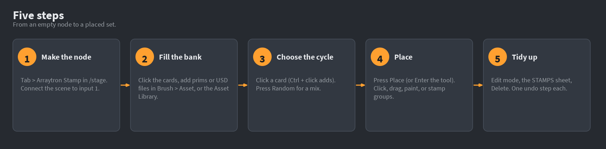
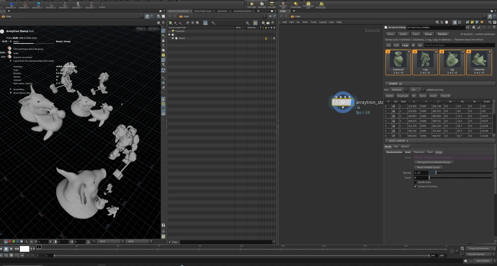
Arraytron Stamp is a Solaris (LOP) node for placing instances by hand. Pick prototypes, click in the viewport, and the node writes one UsdGeomPointInstancer. There is nothing to cook for each click: the stamps are one text parameter, one line per stamp, and the node is one Python LOP.
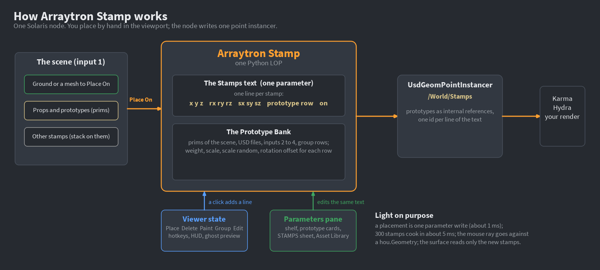
Supported: Houdini 20.5, 21 and 22 (Solaris). The node type is arraytron::stamp::<version>.
Arraytron_Stamp_v0.9.3_Release.rar anywhere (WinRAR or 7-Zip).Install Arraytron Stamp.cmd. It installs for every Houdini 20.5, 21 and 22 it finds, into %LOCALAPPDATA%\ArraytronStamp, with its own package file (arraytron_stamp.json) and shelf. It never touches Arraytron's own install./stage press Tab and type Arraytron Stamp.Updating: open the Arraytron Stamp shelf and press Check for Updates. It reads the release feed, checks the checksum of the download, installs the new version next to the old one (the last two are kept) and asks you to restart Houdini. Uninstall: run Uninstall Arraytron Stamp.cmd.
Arraytron_Stamp_v0.9.3_demo.hip) has three nodes: 300 stamps on a hilly ground, 11 stamps edited by hand, and Stamp_C_Groups, which shows the six group layouts and the group randomization. Arraytron_Stamp_v0.9.3_paint_falloff_demo.hip shows the Paint falloff: uniform, density only, scale only, soft natural, a long S stroke and uneven terrain./stage, create Arraytron Stamp and wire your scene (the ground, the props) into input 1./World/Props/Rock, or USD File. Or add from the Asset Library. Each row becomes a card.When you select a Stamp node, the pane shows more than parameters. From the top:
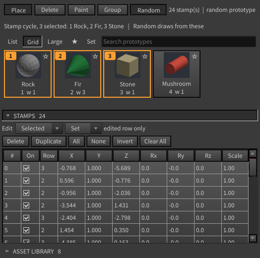
A row of the bank is a prototype. Its type is Prim Path (a prim of input 1, space separated paths allowed), Input Connection (inputs 2 to 4), USD File or Group Children (a stamp takes one child of the group). Each row has Weight (how often Random draws it), Scale, Scale Random and Rotation Offset (applied by the cook, so the preview and the result agree), and an On switch. A row switched off is not a prototype.
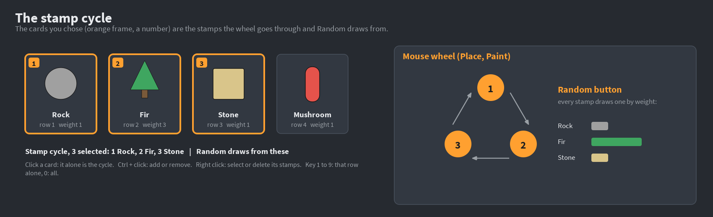
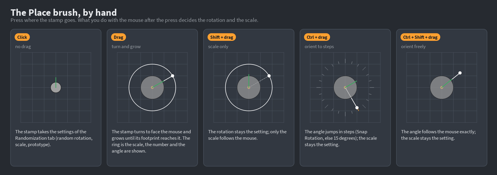
The stamp stays where you pressed. Dragging sets its rotation and scale like Houdini's Layout tool: it turns to face the mouse and grows until its footprint reaches it. With Drag Sets Rotation And Scale off (Brush > Placement) a click places at once.
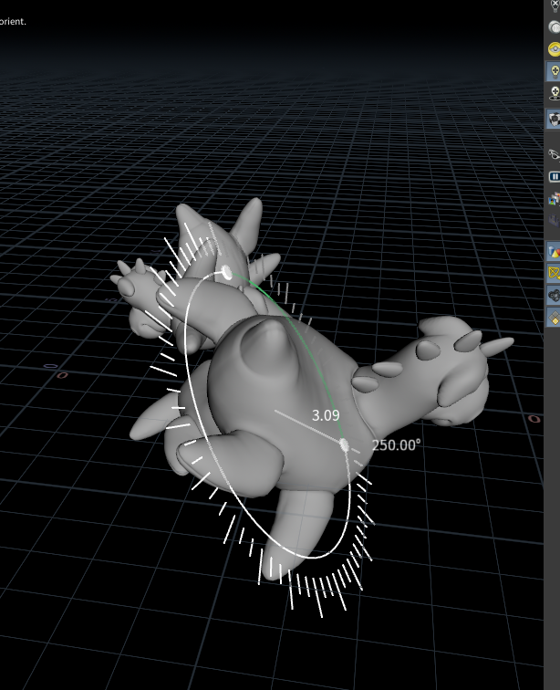
Place On Stamps: the ray also hits the stamps already placed, so a rock goes on a rock and stamps stack. Switch it off in Options to go through them.
Brush > Randomization holds what changes between one stamp and the next, in three boxes and a Seed. The same Seed gives the same stamps, and more stamps never change the earlier ones.
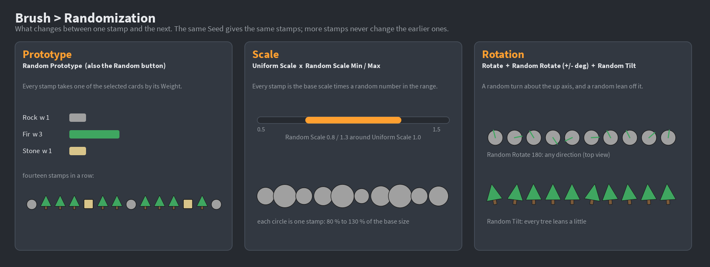
| Box | Parameters | What it does |
|---|---|---|
| Prototype | Random Prototype | Every stamp takes a random card of the stamp cycle by Weight. Same as the shelf's Random button. |
| Scale | Uniform Scale, Random Scale Min / Max | Base scale times a random number in the range (0.8 / 1.3: 80 % to 130 %). |
| Rotation | Rotate, Random Rotate (+/- deg), Random Tilt (+/- deg) | The turn about the up axis, a random turn on top (180 = any direction), a random lean off the up axis. |
| Seed | Seed | Changes the whole random sequence. |
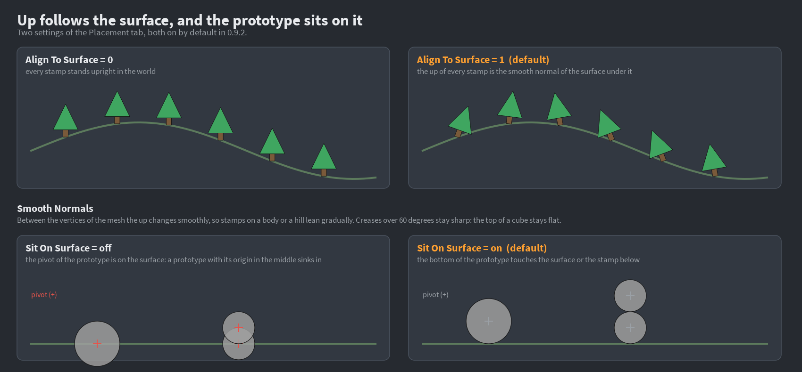
The up axis of every stamp follows the surface where it lands. Smooth Normals (on) uses a smooth normal interpolated between the vertices of the mesh you place on, and also on stamps, so a stamp on a body or a hill leans gradually. Creases over 60° stay sharp: the top of a cube stays flat. 0 keeps stamps upright in the world, in between blends.
The bottom of the prototype's box touches the surface (the bank row's Scale and the stamp's scale included), instead of its pivot. A prototype with its origin in the middle (a character, a toy) stands on the ground or on top of another stamp instead of sinking into it. Prototypes whose pivot is at their base are not moved. The preview, the click, Paint and Group members all use it.
Offset moves a stamp along the normal. Snap Position snaps X and Z to a grid (the point is put back on the surface). Snap Rotation rounds the turn to a step; the Ctrl drag uses 15° when it is 0.
One click stamps several prototypes at once. Choose the cards for the group (Ctrl + click), press Group, click or drag. By default a group is a ring of the selected cards, all the same size; change that in Brush > Group.
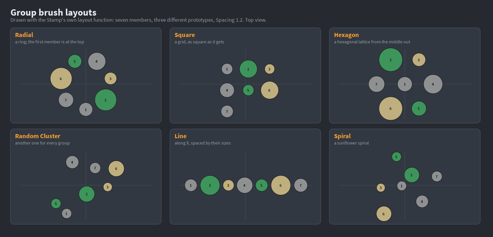
| Setting | Default | What it does |
|---|---|---|
| Layout | Radial | Radial, Square, Hexagon, Random Cluster (another one for every group), Line, Spiral, or Custom. |
| Spacing | 1.15 | How far apart the members stand, as a multiple of their sizes (1 = just touching). |
| Count | 0 | 0 = one of each selected card. N = that many members, each drawn from the selected cards by Weight. |
| Shuffle Order | off | The members stand in a different order for every group. |
| Match Member Sizes | on | Every member is scaled to the median size of the selected prototypes, so a small one is not lost next to a big one. Off: each keeps its own size. |
| Random Group Scale Min / Max | 1 / 1 (off) | Every group gets its own random scale. Dragging still sets the size. |
| Random Member Scale Min / Max | 1 / 1 (off) | The members of one group differ from each other. |
| Random Member Rotation | 0 (off) | Each member is turned by a random angle up to this. |
| Conform To Surface | on | Every member is dropped onto the surface (or the stamp) under it. |
The group takes the rotation and Random Rotate / Tilt settings of the Randomization tab; dragging turns and scales the whole group (its footprint reaches the mouse). The preview shows every member as the prototype itself (up to 12; the rest as boxes).
Drag to paint stamps inside a disc that follows the surface. Ctrl + drag erases the stamps inside it. The stamps take the Randomization settings and the stamp cycle. One undo step per stroke.
| Parameter (Brush > Paint) | Default | Meaning |
|---|---|---|
| Radius | 1 | Shift + wheel, [ ] in the viewer |
| Density | 2 | Stamps per unit area a dab tries to place (Ctrl + wheel) |
| Spacing | 0.4 | Least distance between two stamps, so painting over the same spot fills it and stops |
| Edge Falloff | 0.5 | 0 even, 1 almost nothing at the rim |
The Paint brush can thin the stamps and shrink them towards the rim of the brush. Switch the two channels on in Brush > Paint > Falloff: Enable Density Falloff and Enable Scale Falloff. Both read the same field, the distance to the whole path of your stroke, so a stroke is a ribbon with a soft edge: no circles at the dabs, the same result at any mouse speed, and painting the same place again adds nothing (the Spacing).
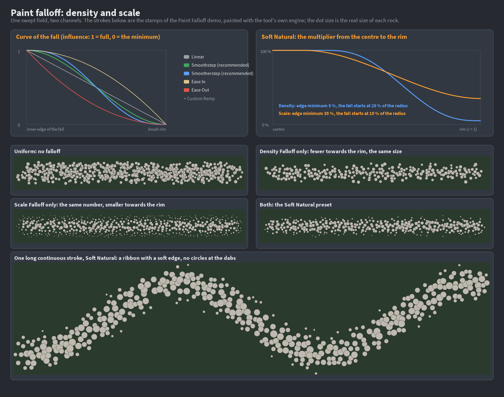
| Parameter | Default | What it does |
|---|---|---|
| Preset | Uniform | Sets the parameters below: Uniform (none), Soft Natural (both, gradual), Sparse Edges (strong density fall, mild scale fall), Growth (strong scale fall, moderate density fall), Dense Center (concentrated in the middle), Custom (changes nothing: edit the parameters yourself). |
| Enable Density Falloff / Enable Scale Falloff | off | Off, the brush is the classic dab brush, as before. |
| Edge Minimum (%) | 0 density, 30 scale | The density (or the scale) at the rim, as a percentage of the middle value. |
| Center Maximum (%) (scale) | 100 | The scale in the middle; more than 100 makes the stamps bigger there. |
| Falloff Width (%) | 100 | How much of the radius the fall takes, counted from the rim inwards. 100 starts at the middle, 40 keeps the inner 60 % at full value, 0 is a hard edge. |
| Falloff Strength (%) | 100 | How much of the fall is used: 0 is no falloff. |
| Curve | Smoothstep | Linear, Smoothstep, Smootherstep (the two natural ones), Ease In (stays full longer, drops at the rim), Ease Out (drops early), Custom Ramp (left of the ramp is the rim, right the inner edge). |
Click, or press and drag over several stamps. They turn red while you drag and are all deleted on release, in one undo step.
Shift+B toggles Brush and Edit (the Edit tab of the pane follows). In Edit mode:
Open the STAMPS section of the pane: every stamp is a row (number, On, prototype Row, X Y Z, Rx Ry Rz, Scale). Cells are editable. The selection is the selection of the Edit mode, both ways.
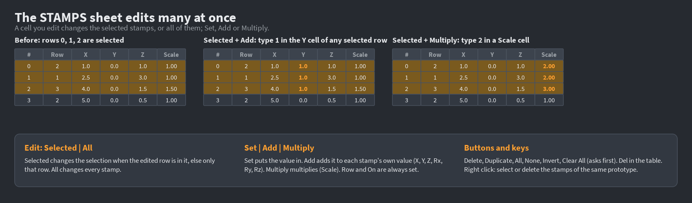
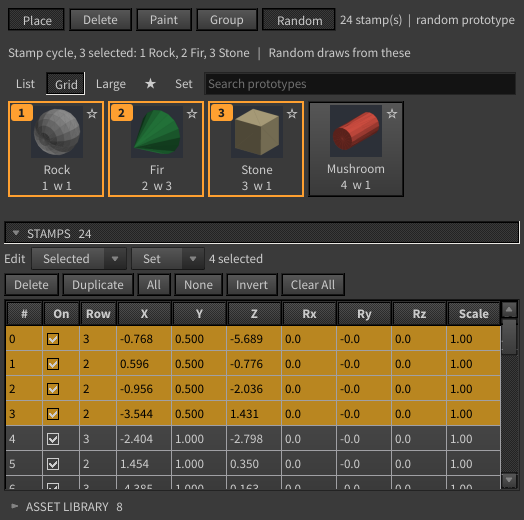
They are Houdini hotkeys: Edit > Preferences > Hotkeys, context arraytron_stamp_093 Operation. The viewer's HUD panel lists the hints (Shift+F1 hides it).
| Key | Action |
|---|---|
| Shift + B | Toggle Brush and Edit mode |
| C | Brush menu: Place, Delete, Paint, Group, Edit mode |
| B | Options menu: Align To Surface, Random Prototype, Drag Sets Rotation And Scale, Place On Stamps, Group: Set Layout From Selected Stamps / Reset To Radial Layout, Snap Rotation |
| Wheel | Next prototype of the stamp cycle (Place, Paint). In Edit mode the wheel is the viewport's. |
| Shift + wheel, [ ] | Scale of the next stamp (Paint: the radius) |
| Ctrl + wheel, , . | Rotation of the next stamp (Paint: Ctrl + wheel is the density) |
| 1 – 9, 0 | That bank row alone is the cycle; 0: no cycle (all) |
| Drag | Shift scale only · Ctrl orient to steps · Ctrl+Shift orient freely |
| Z (held) | Edit mode: duplicate while dragging the handle |
| Del | Edit mode: delete the selection |
| G | Edit mode: the selection becomes the Group layout |
| Enter, Esc | Finish a stroke / leave the tool |
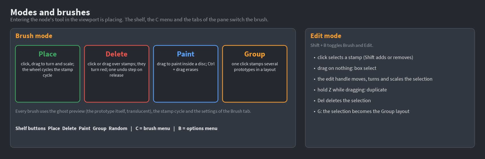
| Parameter | Default |
|---|---|
| Random Prototype | off |
| Uniform Scale | 1 |
| Random Scale Min / Max | 1 / 1 |
| Rotate | 0 |
| Random Rotate (+/- deg) | 0 |
| Random Tilt (+/- deg) | 0 |
| Seed | 1 |
| Parameter | Default |
|---|---|
| Prototype Bank (rows: type, source, Weight, Scale, Scale Random, Rotation Offset, On) | one row, the built-in sphere |
| Prototype Row (the next stamp; the wheel and the cards set it) | 0 = the first enabled row |
| Parameter | Default |
|---|---|
| Align To Surface | 1 |
| Offset | 0 |
| Sit On Surface | on |
| Smooth Normals | on |
| Snap Position | 0 (off) |
| Snap Rotation (deg) | 0 (off; Ctrl drag uses 15) |
| Drag Sets Rotation And Scale | on |
See sections 10 and 9.
Selection line, Select All, Select None, Invert Selection, Duplicate Selected, Delete Selected, Clear All Stamps.
| Parameter | Default |
|---|---|
| Place Instances (enter the tool) | button |
| Place On (prim paths of input 1, space separated) | empty = the ground plane Y = 0 |
| Place On Stamps | on |
| Output Prim | /World/Stamps |
| Make Prototype Source Primitives Invisible | on (USD files are always staged hidden) |
| Parameters Pane (status) and Reload Stamp Pane |
Placing is light on purpose. A placement writes one parameter; the cook parses the text with numpy and writes the arrays; the mouse ray goes against a hou.Geometry (Houdini's own acceleration structure). In 0.9.2 the surface the tool places on is read incrementally: after a click, a group or a paint dab only the new stamps are read; the preview does not parse the whole Stamps text on every mouse move; and a group's rays test only the stamps near it.
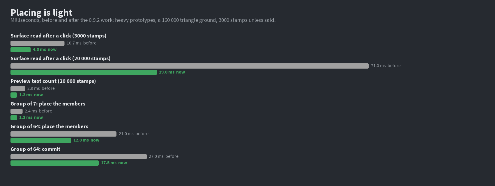
Intel Core i9-13900K, 128 GB, Windows 11, Houdini 22.0.368 and 20.5.445. Brush radius 2, Density 3, Spacing 0.3, Soft Natural, a 200 000 triangle prototype in the bank, 400 mouse positions along a long stroke (about 1200 stamps). Milliseconds per mouse position, mean (95th percentile), from tools/profile_paint_falloff.py:
| Stamps already there | Houdini | New brush (the tool) | A write at every move | Classic dab brush, per dab |
|---|---|---|---|---|
| 300 | 22 | 2.6 (4.1) | 13.6 (19.2) | 31.4 |
| 3 000 | 22 | 2.6 (7.2) | 9.7 (11.4) | 19.3 |
| 10 000 | 22 | 1.8 (2.1) | 18.5 (21.0) | 32.5 |
| 3 000 | 20.5 | 1.4 (2.5) | 7.5 (9.0) | 16.4 |
| 10 000 | 20.5 | 1.6 (2.1) | 14.0 (15.6) | 28.5 |
The tool holds the writes back (at most one every 50 ms): writing the Stamps parameter costs as long as the text is. Painting the same stroke again over 12 000 stamps adds none. One machine, not a guarantee. Details: docs/PAINT_FALLOFF_TECH.md.
The node's Python module has the same functions the tool calls, so a script places exactly what a click places: m = hou.node('/stage/arraytron_stamp1').hdaModule().
| Function | What it does |
|---|---|
stamp_add(node, pos, normal, bounds=None) | Append a stamp (Randomization settings, Seed). bounds=m.stamp_proto_bounds(node) adds Sit On Surface. |
stamp_group_add(node, surf, pos, normal, bounds=...) | Place a group with the Group settings. |
stamp_add_batch(...) | Many stamps, one parameter write. |
stamp_surface(node) | The surface to ray cast: hit(origin, direction) gives position, normal, distance. |
stamp_edit_rows(node, indices, op, **values) | Edit many stamps: op 'set', 'add', 'mul'. |
stamp_select_proto, stamp_delete_proto, stamp_counts | Select, delete and count the stamps of a prototype row. |
stamp_delete_many, stamp_duplicate, stamp_set_selection | Delete, copy and select stamps by line number. |
stamp_paint_path(node, surf, points, bounds), StampPaintStroke, stamp_paint_preset(node, 'soft') | Paint a whole stroke with the tool's engine (falloff on or off); the incremental stroke object; set a falloff preset. |
stamp_group_capture, stamp_group_reset, stamp_group_items | The Group layout. |
The data is the hidden parameter stamps: one line per stamp, x y z rx ry rz sx sy sz proto on. Lines starting with # are comments.
| Problem | What to do |
|---|---|
| The pane shows only a plain parameter dialog | Options > Reload Stamp Pane, then select the node again. |
| Nothing appears when I click | Check that input 1 is connected, Place On names prims that exist (or is empty for the ground plane), and that you see the node (display flag). The prompt line of the viewer shows errors. |
| Stamps sink into the ground / float | Sit On Surface (Placement) puts the bottom of the prototype's box on the surface. For a prototype whose origin is already at its base it changes nothing; for a prototype with an odd box, switch it off and use Offset. |
| Stamps are all upright on a slope | Align To Surface is 0 (nodes made before 0.9.2 kept their saved value). Set it to 1. |
| The originals are still visible | Options > Make Prototype Source Primitives Invisible. |
| Paint falloff makes no difference | Enable Density Falloff or Enable Scale Falloff (Brush > Paint > Falloff); with both off the classic brush is used. Check Edge Minimum is below 100 % and Falloff Strength above 0. |
| A group is the wrong size | Match Member Sizes scales members to the median prototype size; the group's own size is Uniform Scale (and the drag). Check Random Group Scale is 1 / 1. |
| Check for Updates says it cannot reach the server | The feed is on GitHub (the stamp-latest release). Check the connection, or install the new RAR by hand. |
| Version | What changed |
|---|---|
| 0.9.3 | Paint falloff: Density and Scale Falloff over a swept stroke, presets, curves, custom ramps, viewport feedback, the Paint Falloff demo. |
| 0.9.2 | Group layouts and group randomization, Match Member Sizes, Align To Surface on by default with smooth normals, Sit On Surface, faster placing, demo node C. |
| 0.9.1 | Stamp management (buttons, menus, per-prototype select / delete), Randomization tab, visible stamp cycle, no squashed text. |
| 0.9.0 | Group brush, Random button, the sheet edits many stamps. |
| 0.8.0 | First public release: ghost preview, Paint brush, cards with thumbnails, installer and updater. |
Arraytron Stamp is part of the Arraytron family of tools but is installed, updated and versioned on its own. Full changelog: CHANGELOG_STAMP.md.